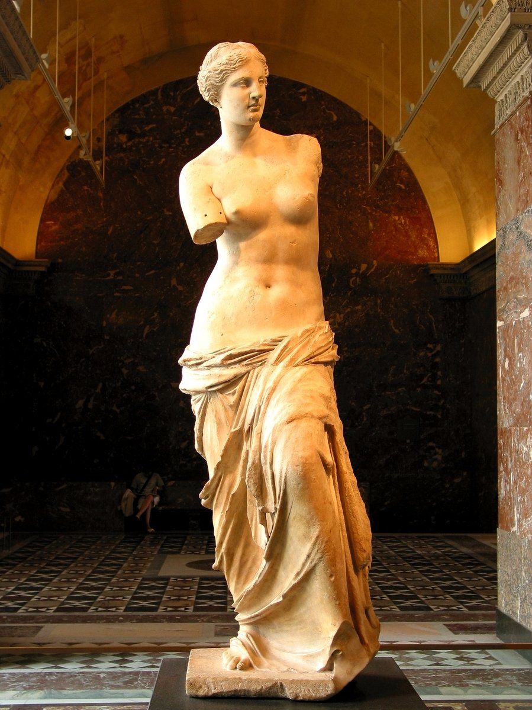
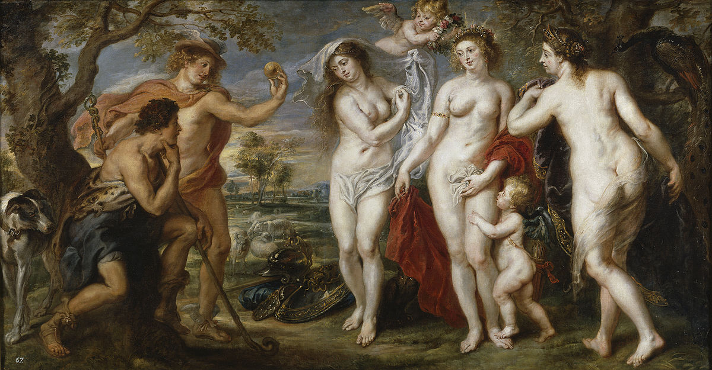
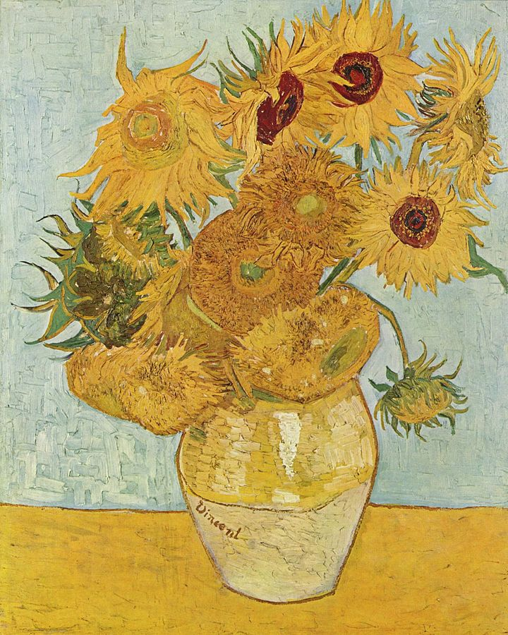

艺术的随想 – 杂（一）
文章目录
为什么会出现艺术？
因为人类不完美，用雕塑造神，完美的身材完美的面容； 因为人类是孤独的，用画来寄情山水，用画来描绘自然； 因为人类是脆弱的，用建筑来供奉神明，用庙宇来盛放信仰。
 图1. 《米洛的维纳斯》（Venus de Milo），公元前2世纪，大理石，高202厘米，巴黎卢浮宫博物馆
 图2. 《千里江山图》卷，北宋，王希孟，绢本，设色，纵51.5cm，横1191.5cm，故宫博物馆
图2. 《千里江山图》卷，北宋，王希孟，绢本，设色，纵51.5cm，横1191.5cm，故宫博物馆
图3. 魏卢帕夏寺，印度亨比城，公元7世纪至今
什么是艺术杰作？
不同的历史时期、不同的社会环境、不同的政治方向，甚至很多细小的因素，都会影响不同作品。 当下的作品有时远不如年代久远的一砖一瓦；年代久远时遭到破坏的“陋作”远不如当时君王贵族叫好的“上乘作品”，而时光长河却淘尽“陋作”铅华，展现珍珠般光芒。
曾经古希腊的美少女美男子，光滑的肌肤优雅的身材，拒人于千里之外的冷酷；却能从高更的塔希提岛上黝黑少女眼中，读到温柔和爱情的故事。 这都是杰作，只是散发出来的味道不同罢了。就像一盘是五分熟牛排，得烛光下安静独尝；而另一份像是江南乡间小菜，与爱人在小院中共享佳肴。
 图4. Peter Paul Rubens, The Judgement of Paris, 1638-1639, 199 × 379 cm, Museo del Prado, Madrid
 图5. Paul Gauguin, When Will You Marry?, 1892, oil on canvas, 101 x 77 cm, Private collection
图5. Paul Gauguin, When Will You Marry?, 1892, oil on canvas, 101 x 77 cm, Private collection
为什么要了解艺术？
“历史是任人打扮的小姑娘”，而艺术作品、文学作品却能保留着不可篡改的真实。甚至流露满足权贵的虚伪，也是社会中的真实。 艺术作品是其次，创作艺术是重点。谁在创作？故事是什么？这是每个作品背后巨大的财富。
梵高的向日葵，在配着他写给弟弟提奥的信时，才知道他向往的仅是一丝丝温暖。如果割裂出只是欣赏画，分析画的颜料色彩，就叹为观止，那种感叹肤浅了。 达芬奇的蒙娜丽莎，在结合他的手稿，便惊叹于超人的智慧与探索精神。而只是单纯去想她神秘的笑，却不去想她的笑与拉斐尔的圣母的笑有什么不同，这趣味就大大降低了。
 图6. Sunflowers (F456), third version: blue green background, Oil on canvas, 91 × 72 cm, Neue Pinakothek, Munich, Germany
 图7. 梵高在写给弟弟提奥的信中提到他希望将向日葵做成三联画
图7. 梵高在写给弟弟提奥的信中提到他希望将向日葵做成三联画
 图8. Leonardo da Vinci, Lisa Gherardini, c. 1503–1506, perhaps continuing until c. 1517, Oil on poplar panel, 77 × 53 cm, The Louvre Museum, Paris
图8. Leonardo da Vinci, Lisa Gherardini, c. 1503–1506, perhaps continuing until c. 1517, Oil on poplar panel, 77 × 53 cm, The Louvre Museum, Paris
 图9. Leonardo da Vinci, Leonardo’s physiological sketch, 1510
图9. Leonardo da Vinci, Leonardo’s physiological sketch, 1510
艺术会消失吗？
照相机发明时已经取代“画得像现实”的画，3D打印机已经能打印出“只有你想不到，没有做不到”模型，AI机器人可以任意涂鸦出一幅抽象又充满神秘作品。 但是，照相机，3D打印机[1]，AI机器人[2]，都是“艺术家”在操作，即使是程序员，在某种程度上也在代码中写入了自己随意的情感。
 图10. 3D printing art
图10. 3D printing art
 图11. AI painting art
图11. AI painting art
不知道在快餐文化大行其道的二十一世纪，艺术会走向哪里？ 一切都在向前，前方可能星空，也可能是沼泽。
[1] 3D创作艺术品，https://3dprintingindustry.com/news/3d-printing-art-really-76843/ [2] AI创作绘画，https://www.bloomberg.com/news/articles/2018-05-17/ai-made-incredible-paintings-in-about-two-weeks